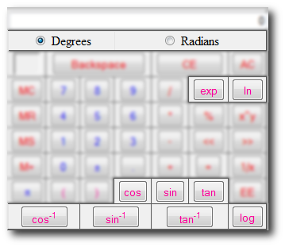

Trigonometric Functions

- At the top you can select a mode for the trig functions to be calculated in, Degrees or Radians. Depending on what you need to calculate is how you decide what mode you need to be in. Most commonly it's Degrees unless you're calculating angular kinematics or simple harmonic motion.
-
exp (exponential, ex) inserts 'e^(' into the current equation.
- Not to be confused with regular e.
- 2e3 = 2*10^3 = 2000
- 2*e^(3) = 40.171...
- ln (natural log) inserts 'ln(' into the current equation.
- log (log base 10) inserts 'log(' into the current equation.
- cos inserts 'cos(' into the current equation.
- sin inserts 'sin(' into the current equation.
- tan inserts 'tan(' into the current equation.
- cos-1 inserts 'acos(' into the current equation. Also known as the inverse cos or arc-cos.
- sin-1 inserts 'asin(' into the current equation. Also known as the inverse sin or arc-sin.
- tan-1 inserts 'atan(' into the current equation. Also known as the inverse tan or arc-tan.
Common Math rules
ex and ln(x) are inverse of each other meaning eln(x)=x and ln(ex)=x
ln(x) (natural log) is the integral of 1/x which was proven by Euler.
log(x) is the ratio of ln(x)/ln(10). The inverse of log(x) is 10x so log(10x)=x and 10log(x)=x. By default log(x) is log10(x)
To calculate a different base of log, for example log3(3x)=x, you would have to calculate ln(3x)/ln(3)=x